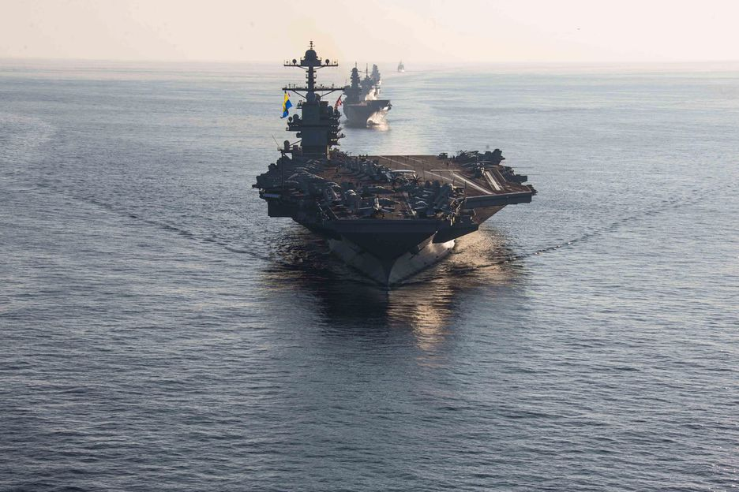

Tensões no Mar Mediterrâneo Oriental
Os Estados Unidos enviaram ao Mar Mediterrâneo Oriental o porta-aviões USS Gerald R. Ford (CVN 78)...
Leia mais
Tensões aumentam à medida que o Hamas captura reféns
A guerra entre o grupo terrorista Hamas e Israel atingiu um novo nível de complexidade...
Leia mais

Relatos são de três brasileiros'', diz porta-voz de Israel sobre reféns
Na manhã desta quarta-feira (11/10), Jonathan Conricus, porta-voz internacional das Forças de Defesa de Israel (IDF)...
Leia mais

A conversa do chanceler com Lula sobre a guerra entre Israel e Hamas
De Jacarta, na Indonésia, o chanceler Mauro Vieira teve uma longa conversa por telefone com Lula...
Leia mais